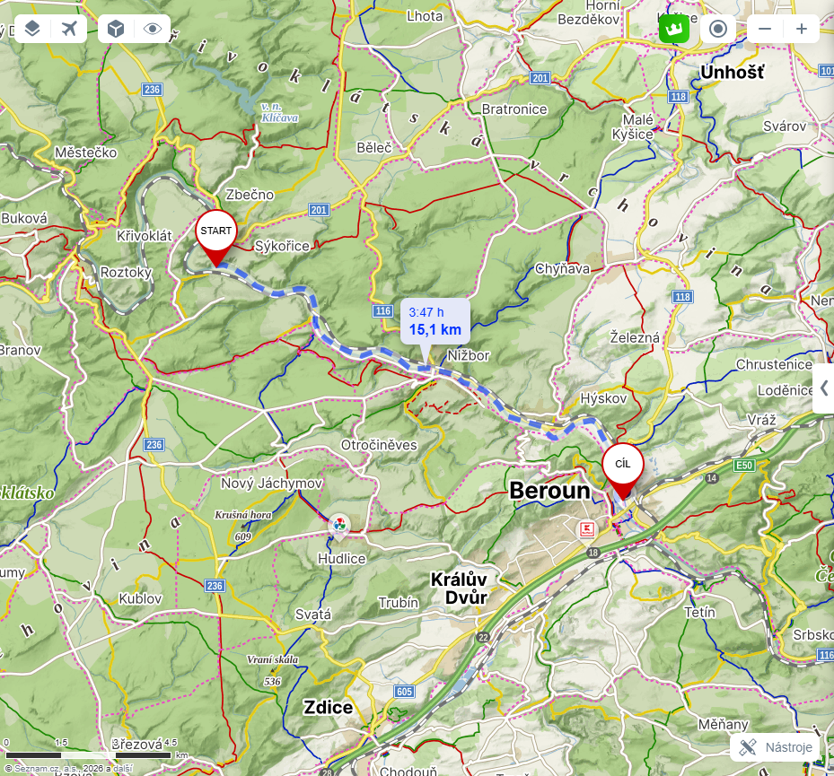
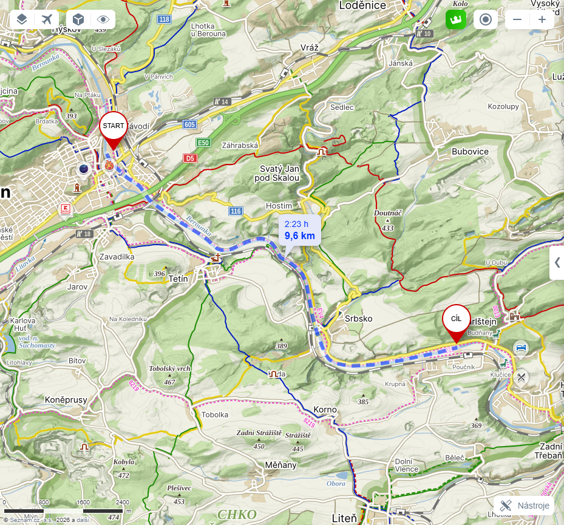
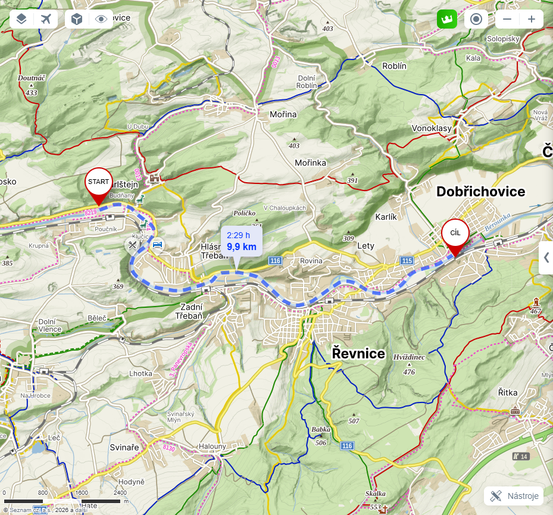

Letos měníme kanoe za pohodlné rafty a splouváme malebnou Berounku z Račic přes Beroun až do Dobřichovic.
Zde najdeš klíčové informace o platbách, odjezdu, lodích a logistice.
Čtvrtek 2. 7. v 17:30
Dospělý 1000 Kč / Dítě 500 Kč
Aktuálně objednáno 5 raftů
Letos splouváme Berounku v úseku z Račic do Dobřichovic. Trasa je klidná a bezpečná.
Račice (pravý břeh)
Sraz v 17:30 u hospody v Čelechovicích. Všichni společně přejedeme auty do Račic, kde vyložíme stany a bagáž (stany si veze každý sám, nebo je možné je naložit k Pedrovi do dodávky po předchozí domluvě). Poté řidiči odvezou auta do Dobřichovic (cílový kemp), tam zaparkují 4 auta a společně se vrátí 5. sběrným autem zpět do Račic, kde postavíme stany a zahájíme akci.
cca 15 km na raftech
Vyplutí z Račic. Mineme Zbečno, Žloukovice, jez pod zámkem Nižbor a jez Hýskov (oba budeme přetahovat). Večer dorazíme do Autokempu Na Hrázi v Berouně.
Ubytování: Plně vybavený kemp na ostrově s veškerým zázemím (sprchy, WC, občerstvení, kousek do centra Berouna na večeři).

cca 12 km na raftech
Splutí velkého jezu v Berouně (přetahování). Krásná plavba skrz CHKO Český kras se zastávkou na oběd a pivo v Srbsku. Večer dorazíme do kempu pod hradem Karlštejn.
Ubytování: Autokemp Karlštejn (případně kemp ve Stínu), krásné okolí s výhledem na hrad.

cca 11 km na raftech
Vyplutí z Karlštejna. Projedeme Zadní Třebaň (jez Třebaň) a Lety. Cíl v Autokempu Dobřichovice.
Ubytování: Autokemp Dobřichovice (přímo u jezu naproti zámku, restaurace U Jezu, sprchy, WC).

Pondělí dopoledne (bez plavby)
V pondělí (státní svátek) už není plánovaná žádná plavba. Ráno v klidu sbalíme stany, odevzdáme rafty a rozejdeme se domů. Kemp se nachází jen pár minut od vlakového nádraží Dobřichovice s přímými spoji směr Praha a Beroun.